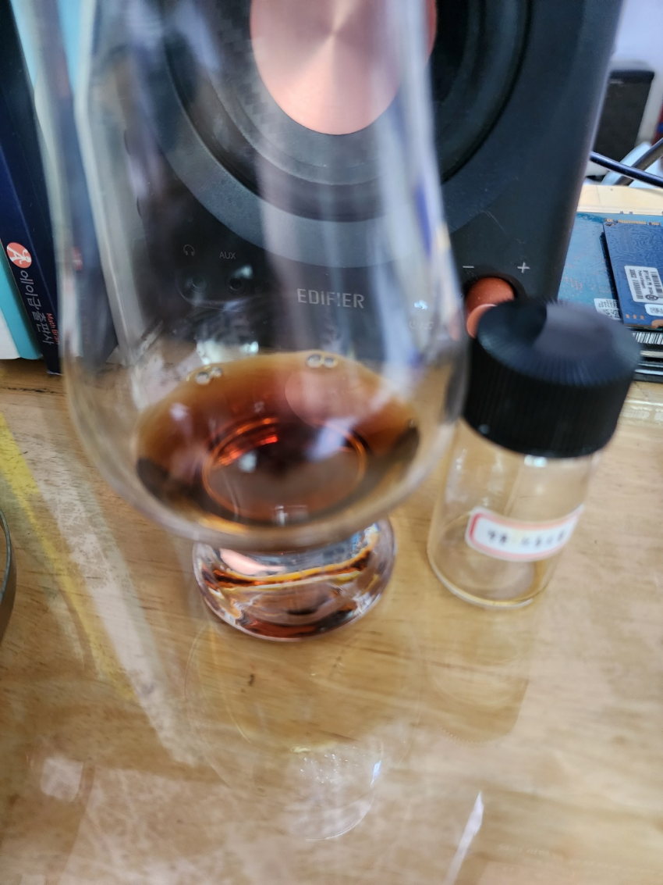

N
달달한 청포도의 향과 태운 호두, 아몬드와 같은, 오키함과 견과류 특유의 고소함이 섞인 향이 난다.
약간의 흑설탕, 초콜릿 같은 단내 또한 느껴진다.
조금 시간이 지나자 복분자, 라즈베리 같은 과일 향 또한 느껴진다.
끝에서 약간의 버섯과 같은 란시오가 느껴진다.
향들이 다들 강렬하게 느껴진다.
P
다니엘 부쥬의 특징인 꽉 찬 바디감이 여기서도 느껴진다.
곤약들은 종종 바디감이 아쉬운 경우가 있는데 이건 탄탄하다.
처음 입에 들어오면 꽤 강한 탄닌감과 적포도의 느낌이 섞이며 단 맛이 덜한 포도 껍질을 빨아먹는 느낌이 난다.
그러다가 카카오 함량이 되게 높은 다크초콜릿 같은 느낌이 나며, 끝에서 란시오가 강하게 느껴진다.
F
다크 초콜릿과 약간의 붉은 베리류의 느낌이 처음에 강하게 느껴진다.
그 후 태운 호두, 아몬드와 같은 고소함과 씁쓸함이 올라오며 혀 또한 약간 텁텁해진다.
또한 끝에서 진짜 미약한 풍선껌? 같은 느낌 또한 난다.
씁... 탄닌감만 좀만 덜했어도 너무 맛있었을 거 같은데 너무 강렬하네...
바디감은 좋은데 탄닌감이 향, 맛, 피니쉬 셋 다 덮어버리는 이슈가 있는 꼬냑인 듯...
바디감이나 꽉 찬 강렬한 맛과 향 때문에 위스키 좋아하는 사람들은 되게 좋아하긴 할 거 같다 확실히
나눔해주신 HighCost 님께 감사드립니다!